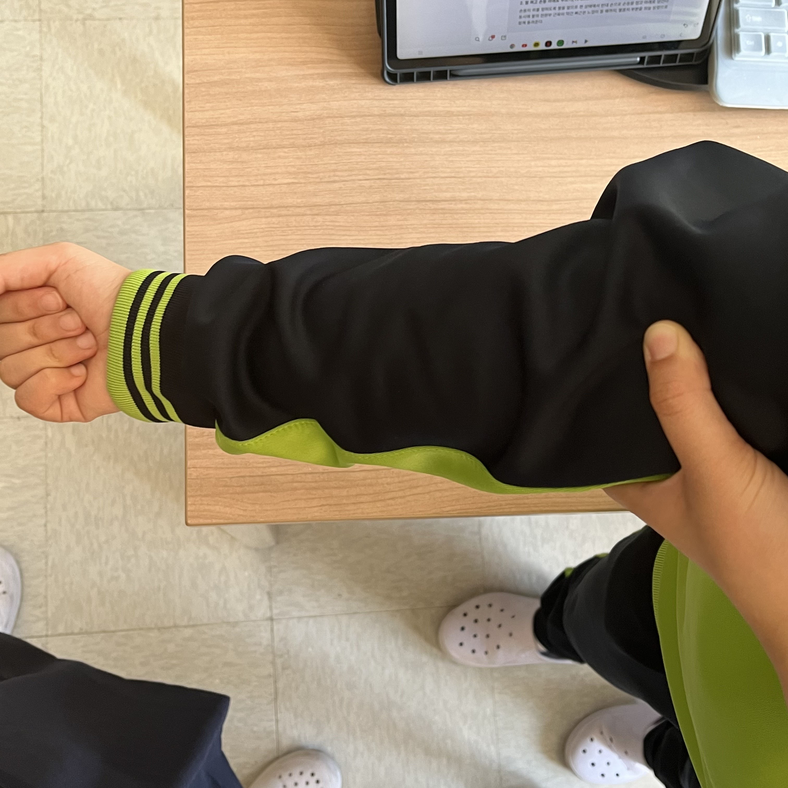
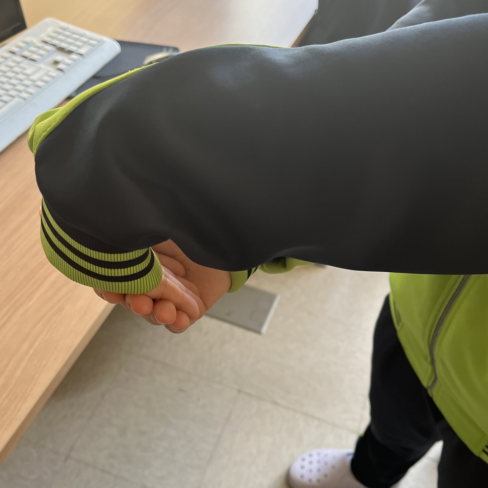
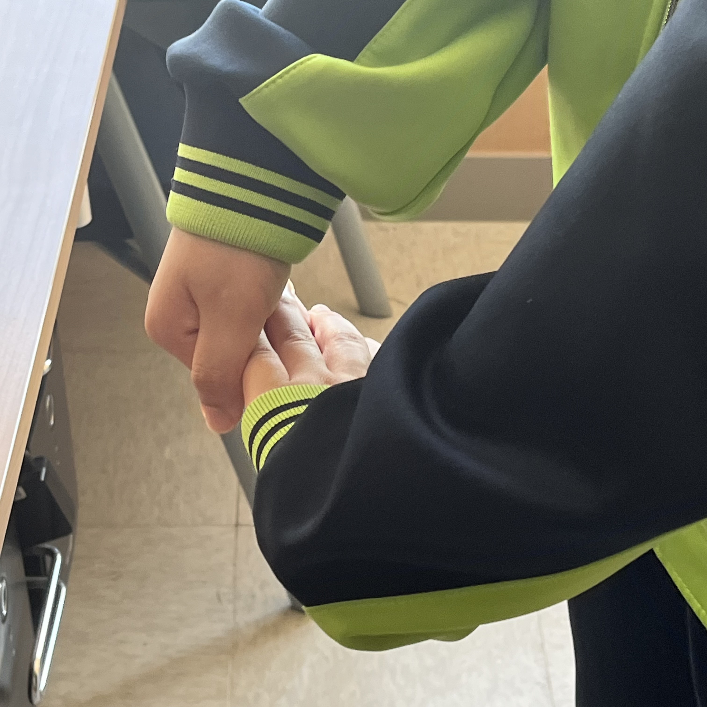
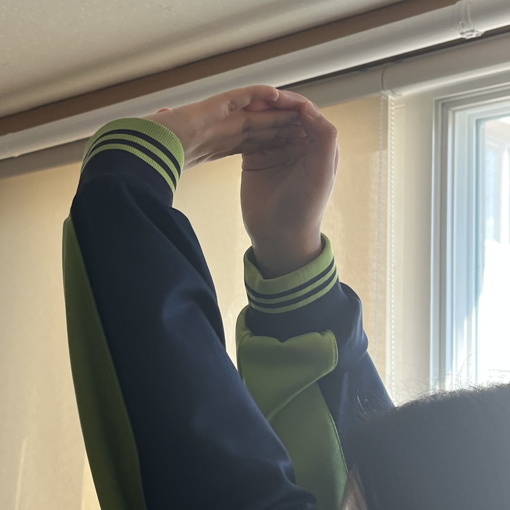

탈출! 거북목
신체 : 손목
시간 : 4분 30초
|  |
1. 3세트 | 10회1. 손등이 위로 향하도록 팔을 앞으로 핀다. 2. 팔꿈치 바로 아래 가장 두꺼운 부위 근육을 반대 손으로 강하게 누른다. |
|  |
2. 3세트 | 20초1. 손등이 위를 향하도록 팔을 앞으로 핀다. 2. 반대 손으로 손등을 잡고 아래로 당긴다. 3. 팔의 전완부 근육이 약간 뻐근한 느낌이 들 때까지 유지한다. |
|  |
3. 3세트 | 20초1. 손바닥이 위를 향하도록 팔을 앞으로 핀다. 2. 상태에서 반대 손으로 손바닥을 잡고 아래로 당긴다. 3. 팔의 전완부 근육이 약간 뻐근한 느낌이 드는 상태를 유지한다. |
|  |
4. 3세트 | 10회1. 팔꿈치를 편 상태로 양 팔을 최대한 크게 돌린다. 2. 손목을 위로 꺾은 상태에서, 전완부 근육과 어깨를 둘러싼 근육 전체가 늘어나는 느낌을 느낄 수 있도록 천천히 돌린다. |